0x00 简介
Boost 和 CryptoPP 都是在 C++ 社区中广泛使用的库，可以扩展和增强 C++ 的功能。
- Boost 是一个被广泛接受和使用的 C++ 库集合，其包含了大量高质量的、可移植的和有效的库。Boost 在许多方面都增强了 C++ 的功能，包括智能指针、图形处理、正则表达式、线程和同步原语、测试框架等等。目前 Boost 的许多组件都已经成为了 C++ 标准库的一部分。
- CryptoPP 也被称为 Crypto++，是一个免费的、开源的 C++ 加密库，提供了一系列密码学算法的实现，包括散列函数、对称加密算法、非对称加密算法、密码学协议等等。
本文主要记录了如何在 Visual Studio 2022 搭建这两个库的开发环境。
0x10 安装
0x11 编译/安装 Boost
- 从 Boost 官方网站并下载源码压缩包。
- 把下载的压缩包解压到希望存放 Boost 库的地方，如：
S:\04_work\MicrosoftVisualStudio\3rdparty\boost - 在 CMD 中进入该目录，执行命令编译 Boost 库：
bootstrap.bat（Boost 库的一部分是 header-only 的，但有一部分库需要编译才能使用） - 编译后会生成 b2.exe 文件，再执行命令:
.\b2.exe
至此 Boost 库安装完成，可以在 boost/stage/lib （需要记住这个位置）下看到生成的库文件：
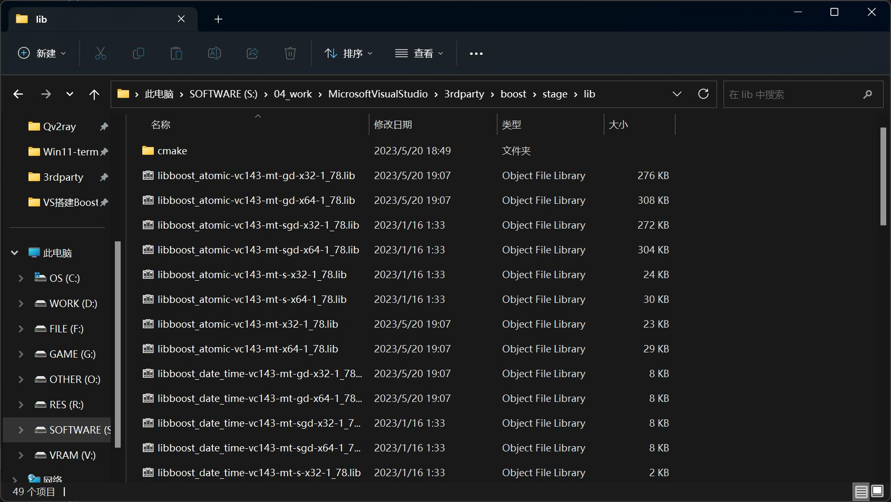
如何选择 Boost 的部分库安装
编译前可以修改 bootstrap.bat 选择要安装哪些库，声明方式为 --with-${MODULE_NAME}，例如：
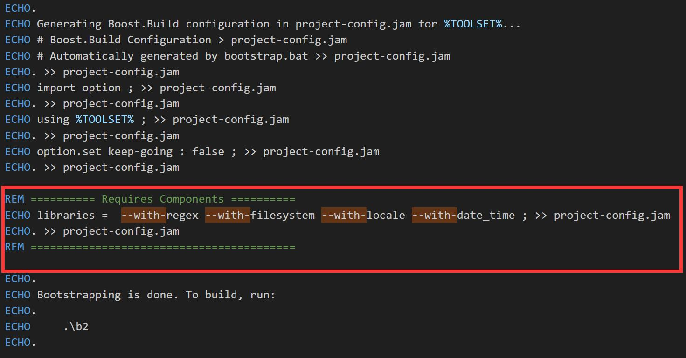
此时最终生成哪些库文件是根据你选择的模块决定的。
0x12 编译/安装 CryptoPP
- 从 CryptoPP 的 GitHub 下载源码
- 找到 cryptest.sln，双击使用 Visual Studio 打开
- 打开后可以看到这个解决方案实际上由 4 个子项目构成：
- cryptdll
- cryptest
- cryptlib
- dlltest
这 4 个子项目的关系是：
- cryptlib: 基础库，用来生成静态链接库
cryptlib.lib - cryptest: cryptlib 的测试项目，可以不用管
- cryptdll: 依赖 cryptlib，用来生成动态链接库
cryptdll.dll，本文不讨论这个库 - dlltest: cryptdll 的测试项目，可以不用管
搞清楚关系之后，我们只需要构建 cryptlib.lib 即可，步骤如下：
- 右键 cryptlib
->>属性->>C/C++->>代码生成：- 若平台选择 Release x64，那么 运行库 要选择 多线程 MT
- 若平台选择 Debug x64，那么 运行库 要选择 多线程 MTd
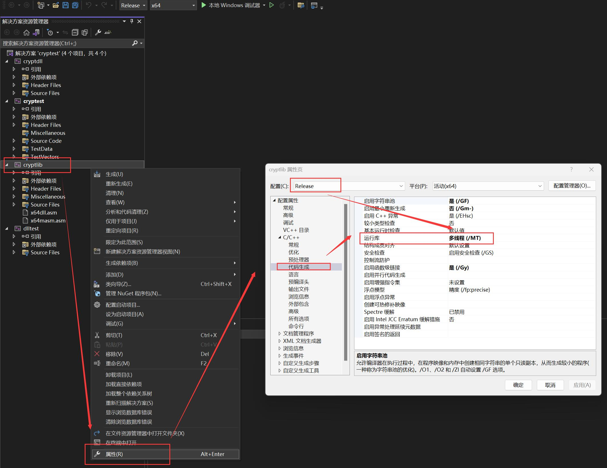
- 确保工具栏当前选择的平台是你期望的，例如 Release x64
- 右键 cryptlib
->>重新生成 - 生成结果会打印 cryptlib.lib 的生成路径，需要记住这个位置，之后会用到。例如我这里的生成路径为：
S:\04_work\MicrosoftVisualStudio\3rdparty\cryptopp\.vs\build\x64\Release\cryptlib.lib - 你可以使用同样的方法再编译 Debug x64 的 cryptlib.lib 备用，类似地其生成 cryptlib.lib 的路径为：
S:\04_work\MicrosoftVisualStudio\3rdparty\cryptopp\.vs\build\x64\Debug\cryptlib.lib
至此 CryptoPP （静态）库安装完成，可以在生成目录下找到 cryptlib.lib 库文件，而且由于它是静态链接库，所以可以拷贝到任意地方使用：
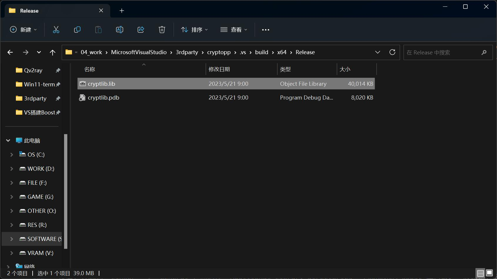
cryptlib.pdb 文件无需理会，它只是存储程序调试信息的文件。
0x20 项目配置依赖库
回到我们这篇文章的最终目标，是搭建 Boost 和 CryptoPP 的开发环境。
那么如何在自己的解决方案（项目/工程）中配置这两个库的依赖呢？
0x21 配置 Boost
为了方便起见，这里我们假设 cryptest 就是我们要开发的项目，用它来进行说明：
首先添加 头文件 目录：
- 右键项目
->>属性->>C/C++->>常规->>附加包含目录 - 添加 Boost 的 头文件 目录（即根目录），例如我这里是：
S:\04_work\MicrosoftVisualStudio\3rdparty\boost
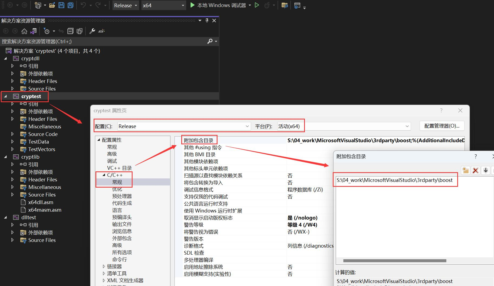
- 右键项目
->>属性->>链接器->>常规->>附加库目录 - 添加 Boost 的库目录，这个目录就是前面编译后生成的位置，例如我这里是：
S:\04_work\MicrosoftVisualStudio\3rdparty\boost\stage\lib
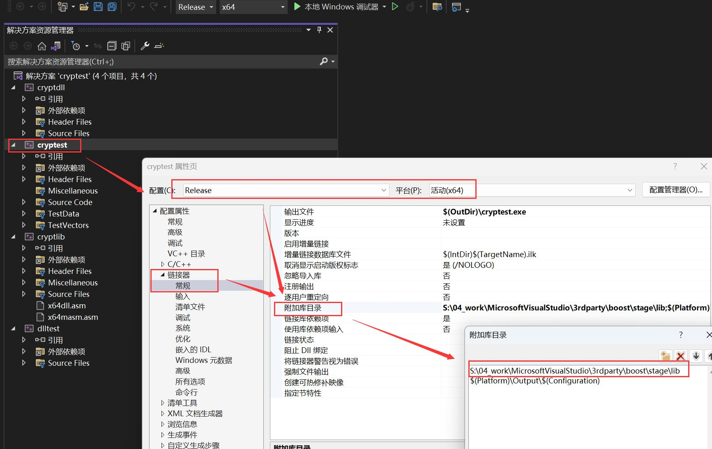
至此项目完成 Boost 库的配置。
现在代码中只要声明诸如 #include <regex.hpp> 这样的头文件，就能引用 Boost 的相关库了。
0x22 配置 CryptoPP
配置之前，需要明确自己的项目所在的阶段：
- 开发阶段：选择 Debug x64，易于调试但文件较大、运行较慢
- 发布阶段：选择 Release x64，不易调试但文件较小、运行较快
之所以要区分，是因为在配置依赖库时，这两个环境是不能同时配置的，否则会编译失败。
C/C++ 的链接器目前还不能智能地选择自己需要哪个库文件
下面以选择 Release x64 为例。
同样地，首先添加 头文件 目录：
- 右键项目
->>属性->>C/C++->>常规->>附加包含目录 - 添加 CryptoPP 的 头文件 目录（即根目录），例如我这里是：
S:\04_work\MicrosoftVisualStudio\3rdparty\cryptopp
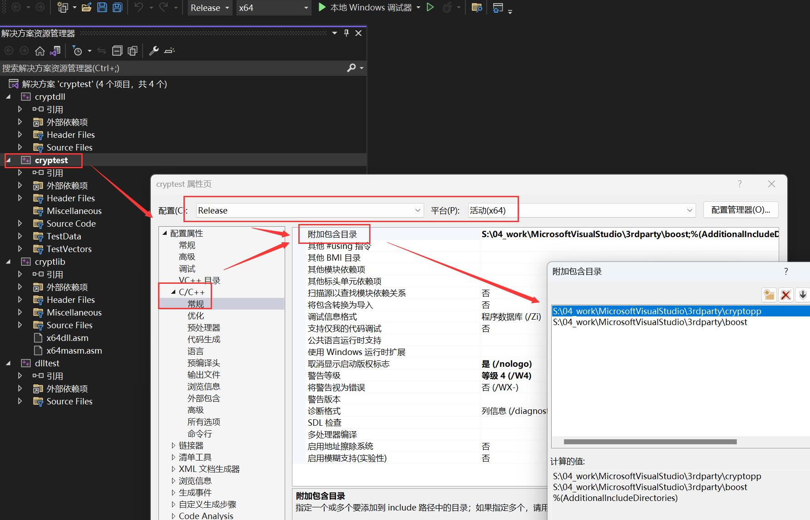
- 右键项目
->>属性->>链接器->>常规->>附加库目录 - 添加 CryptoPP 的库目录，这个目录就是前面编译后生成的位置，例如我这里是：
S:\04_work\MicrosoftVisualStudio\3rdparty\cryptopp\.vs\build\x64\Release
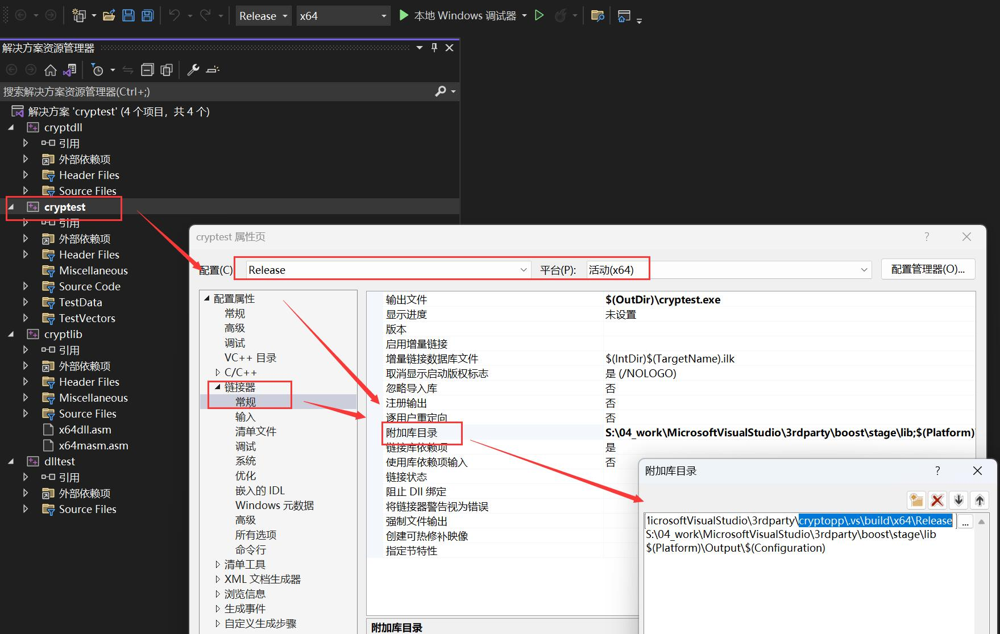
- 右键项目
->>属性->>链接器->>输入->>附加依赖项 - 填写
cryptlib.lib（只需要名称即可，会自动从 附加库目录 中寻找）
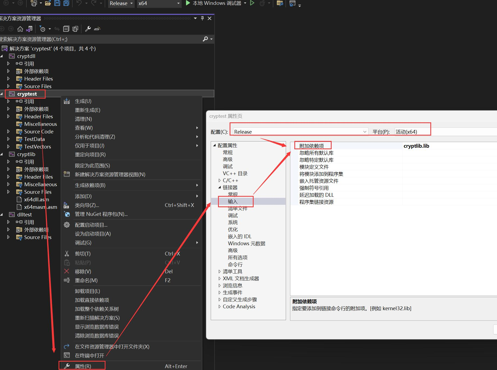
- 右键项目
->>属性->>C/C++->>代码生成->> - 选择
多线程 MT（需要和前面编译 CryptoPP 时的选择一致）
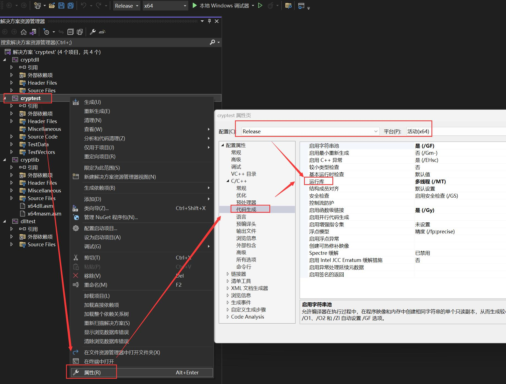
至此项目完成 CryptoPP 库的配置。
现在代码中只要声明诸如 #include <aes.h> 这样的头文件，就能引用 CryptoPP 库了。
0xF0 FAQ
0xF1 报错 _ITERATOR_DEBUG_LEVEL 不匹配
如果生成解决方案时，有类似报错：
严重性 代码 说明 项目 文件 行 禁止显示状态
错误 LNK2038 检测到“_ITERATOR_DEBUG_LEVEL”的不匹配项: 值“0”不匹配值“2”说明你正在尝试将以不同配置（具体来说是迭代器调试级别）编译的库（如 cryptlib.lib）链接到你当前的项目。
首先需要知道，_ITERATOR_DEBUG_LEVEL（迭代器调试级别）是 Microsoft C++ 编译器用于控制其 STL 容器进行迭代器调试的级别：
- 值为 0 : 表示没有迭代器调试（Release）
- 值为 2 : 表示启用了迭代器调试（Debug）
更具体的解释，就是当前项目指定了 Debug，但是用了 Release 编译的库（如 cryptlib.lib）； 或当前项目指定了 Release，但是用了 Debug 编译的库。
解决方法就是保持 项目 与 依赖库 两者 _ITERATOR_DEBUG_LEVEL 的一致性。
修改位置在前面已经提到很多次了，右键项目 ->> 属性 ->> 链接器 ->> 常规 ->> 附加库目录。
不要同时把 Debug 和 Release 的附加库都依赖到项目中
但有时即使附加库配置正确了，还是会出现这个问题，这时可能 _ITERATOR_DEBUG_LEVEL 在项目中被明确设定为了某个值。
检查方法为：
- 右键项目
->>属性->>C/C++->>预处理器->>预处理器定义 - 查找是否存在 _ITERATOR_DEBUG_LEVEL 被设定为某个值的项，将其删除即可
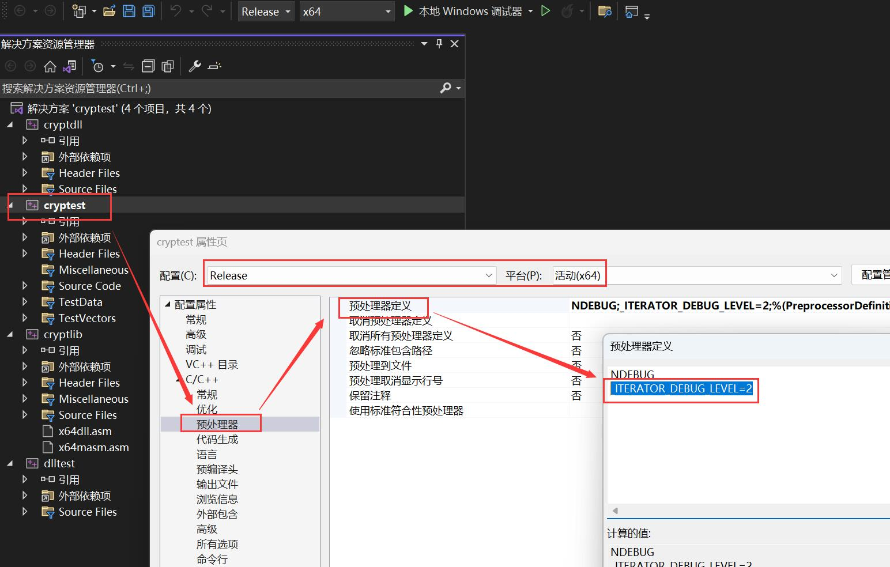
0xF2 报错 MTd_StaticDebug 不匹配
如果生成解决方案时，有类似报错：
严重性 代码 说明 项目 文件 行 禁止显示状态
错误 LNK2038 检测到“RuntimeLibrary”的不匹配项: 值“MTd_StaticDebug”不匹配值“MT_StaticRelease”说明你当前的项目，依赖了一个以不同的 运行时库 所编译的库（如 cryptlib.lib）。
在 Visual Studio 中，有两种 C++ 运行时库 可以选择：
/MD: 对应动态多线程 DLL 运行时库Multi-threaded DLL (/MD)/MT: 对应静态多线程运行时库Multi-threaded (/MT)d后缀表示 Debug 版本（例如/MDd和/MTd）。
回到这个报错本身，其意思是： cryptlib.lib 是使用 /MT（MT_StaticRelease）编译的，而当前项目正在用 /MTd（MTd_StaticDebug）编译。
解决方法就是保持 项目 与 依赖库 两者的 运行时库 一致。
修改位置在前面已经提及过了，右键 cryptlib ->> 属性 ->> C/C++ ->> 代码生成，根据实际情况修改即可。